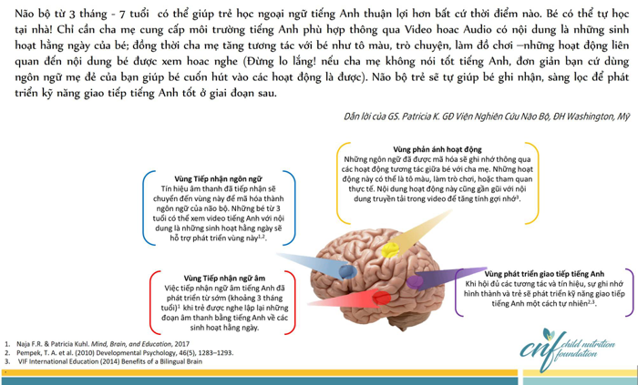
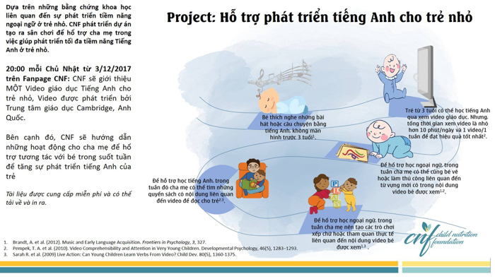

Theo Viện Hoàng Gia Giáo dục Anh Quốc, từ 3 tuổi trở lên là thời điểm tốt trẻ phát triển nhận thức và học ngoại ngữ (ví dụ như học tiếng Anh) song song với tiếng mẹ đẻ. Tuy nhiên, trước 3 tuổi, trẻ có thể có lợi ích trong việc phát triển ngôn ngữ thứ 2 nếu trẻ có những dịp tiếp xúc với ngôn ngữ này dưới dạng âm thanh, không màn hình.
Theo nghiên cứu của GS. Sarah Roseberry, Đại học Temple, Mỹ: trên 96 bé từ 30-42 tháng tuổi về việc sử dụng video trong việc giáo dục ngôn ngữ cho trẻ. Kết quả báo cáo của GS cho biêt: Trẻ phải từ 3 tuổi (36 tháng tuổi) trở lên mới có thể nhận được những lợi ích của việc sử dụng video trong học tiếng Anh.
Dưới 10 phút mỗi ngày. Có thể chia 2-3 buổi xem. Nhưng, tổng thời gian xem video giáo dục tiếng Anh ở tất cả các buổi là dưới 10 phút/ngày.
Nên xem 1 video, cùng nội dung cho các lần xem trong tuần.
Cũng tuân theo nguyên tắc phát triển của não bộ, sự phát triển ngôn ngữ của trẻ nhỏ cũng cần 2 yếu tố:
1. Cần có sự lặp lại đủ lâu: Não trẻ cần phải có sự ghi nhận thông qua những trải nghiệm lập lại và học trên những trải nghiệm này ngày này qua ngày nọ. Việc cho trẻ xem 1 video có nội dung giáo dục trong suốt tuần sẽ thúc đẩy sự phát triển của quy trình lập lại.
2. Cần có sự tham gia của trẻ trong các hoạt động vui chơi và học hỏi: Xem video là chưa đủ, cần thêm nữa là các hoạt động vui chơi cùng trẻ liên quan đến nội dung của video. Điều này sẽ lại 1 lần nữa bắt não bộ trẻ ghi nhớ thông quan 1 trải nghiệm khác đó là vui chơi và sự thích thú trong các hoạt động. Các hoạt động bao gồm: Vẽ, đọc sách, kể chuyện, chơi xếp hình và đi tham quan thực tế.
BigSchool: CNF đã xây dựng một chương trình gọi là hỗ trợ giáo dục tiếng Anh cho trẻ nhỏ (Watch to Learn), được phát triển dựa trên nền tảng lí thuyết: Gia tăng hoạt động vui chơi xen kẽ giáo dục ở độ tuổi sớm sẽ nâng cao chất lượng của các vùng chuyên biệt của não bộ, bao gồm vùng phát triển ngôn ngữ thứ 2 (ngoại ngữ). Video được phát triển bởi Trung tâm giáo dục Cambridge, Anh Quốc.
Tài liệu: CNF sẽ cung cấp miễn phí cho cha mẹ và tất cả tài liệu đều có thể tải về và in ra để cùng chơi và học với trẻ.
Độ tuổi: Độ tuổi tập trung phát triển tiềm năng ngoại ngữ là từ 3-7 tuổi, tuy nhiên các bé từ 1-3 tuổi vẫn có thể tham gia. Đối với các bé nhỏ này chỉ nên nghe hơn là xem các tài liệu video được cung cấp. CNF sẽ hướng dẫn cụ thể ở mỗi hoạt động theo phù hợp từng độ tuổi.
Sân chơi Watch to Learn sẽ tạo 1 môi trường cho cha mẹ và bé tương tác trong tiềm thức của ngôn ngữ được lựa chọn (Ở đây là tiếng Anh). Cha mẹ sẽ làm 3 bước sau:
1. Cho các bé từ 3 tuổi xem 1 clip giáo dục tiếng Anh do CNF giới thiệu vào mỗi tối Chủ Nhật trong 10 phút mỗi ngày. Clip tiếng Anh được CNF lựa chọn sẽ có 2 đặc điểm: Phản ánh 1 sinh hoạt hằng ngày của bé & có nhịp độ lập lại của những ngữ âm quan trọng. Các bé dưới 3 tuổi được khuyến khích là nghe, thay vì xem. Thời gian nghe của các bé vẫn là 10 phút/ngày.
Chính việc được nghe/xem lập lại 1 video có nhịp điệu lập lại mỗi ngày, 2 đặc điểm này của Video sẽ tạo tín hiệu cho vùng Wernicke trong não bộ tiếp nhận và sàng lọc. Các bé nhỏ ít hơn 3 tuổi sẽ đồng thời phát triển vùng Auditory. Những tín hiệu này sẽ được mã hóa thành 1 ngôn ngữ dạng hình ảnh trong não bộ của bé, liên kết với 1 vùng quan trọng trong phát triển ngoại ngữ là Broca và sẽ nằm ở đây để đợi 1 kích thích tố khác. Trong não bộ chỉ có 1 loại "ngôn ngữ chung" được sử dụng là hình ảnh các tín hiệu đã mã hóa, các âm từ các ngôn ngữ khác nhau (Tiếng Việt hoặc tiếng Anh) chỉ là phương tiện truyền đạt. Do đó, dù bạn nói ngôn ngữ nào sau 1 thời gian trẻ vẫn có thể hiểu được. Điều này giải thích hiện tượng gia đình có cha mẹ nói 2 thứ tiếng, nhưng khi ở bên mẹ hay ở bên cha, trẻ đều tương tác được vì não trẻ đã biến thành 1 ngôn ngữ riêng của não bộ để đọc hiểu, các ngôn ngữ cha mẹ sử dụng chỉ là cách truyền đạt, và não sẽ chia ra làm hai và lưu trữ ở đâu đó trong vùng Broca.
Trong video chủ nhật ngày 3/12, những hình ảnh màu đỏ, màu vàng, xanh lá và xanh dương tương ứng với những ngữ âm tiếng Anh như RED, YELLOW, GREEN & BLUE. Bình thường bé vẫn nghe đâu đó ba mẹ nói bằng tiếng Việt là màu đỏ, màu vàng, xanh lá và xanh dương. Như vậy, trẻ sẽ hiểu tính chất của 4 màu nó là như thể nào, 2 cách nói bằng Tiếng Anh và tiếng Việt chỉ là 2 công cụ trong giao tiếp và trẻ sẽ lưu lại khi xem/nghe video.
2. Như đã tạo 1 vùng mã hóa trong Broca, nhưng vẫn phải đợi 1 kích thích tố để gợi nhớ lại để biến nó thành trí nhớ và không còn ở trạng thái tạm thời. Kich thích tố được GS. Saharh, ĐH Nottingham, Anh Quốc chia sẽ: Đó chính là sự tương tác của cha mẹ trong các hoạt động liên quan đến nội dung của video được xem. CNF mong muốn cha mẹ tạo ra kích thích tố đó bằng những hoạt động quen thuộc và dễ thực hiện:
Hoạt động tô màu: Tô màu sẽ lập lại những màu sắc đã được ghi khi nghe/xem video. Hình ảnh của bảng màu sẽ 1 lần nữa được ghi nhớ. Nếu bạn không giỏi tiếng Anh, đừng lo lắng. CNF khuyên cha mẹ nên tạo hứng thú khi tham gia cùng bé, hơn là cố gắng giao tiếp bằng tiếng Anh khi tô màu với bé. Kích thích tố ở đây chính là sự vui vẻ và hứng thú của bé trong hoạt động gợi nhớ, việc phát âm hay giao tiếp bằng tiếng Anh không quan trọng vì việc này đã có Video đảm trách mỗi ngày. Nếu bạn không giỏi tiếng Anh, bạn được khuyên cứ sử dụng tiếng Việt để giao tiếp và tạo hứng thú với bé mới là điểm mấu chốt. Như đã trình bày ở trên, dù bạn dùng tiếng Anh hay tiếng Việt, não trẻ đã sàng lọc và giữ lại, khi cần là sử dụng, nhưng nội dung bé vẫn đảm bảo hiểu.
Đây là 1 số gợi ý giúp tăng tính tương tác:
Bạn chỉ vào hình đám mây màu đỏ và nói đám mây sẽ có màu…. Đợi bé trả lời và nhấn mạnh: màu đỏ, bút chì màu đỏ của con đâu. Nếu bé dùng màu nước, bạn quẹt 1 ít màu đỏ lên tay bé, và nói: Ồ, tay con màu đỏ nè! Tay mẹ màu xanh. Cứ để bé dùng bàn tay hay bàn chân tô màu. Nếu nhà bạn có 2 bé thì cứ để hai bé trao đổi và quyết định chọn màu tô theo ý bé.
Hoạt động làm trò chơi và treo trò chơi ở những nơi bé nhìn thấy: Một lần nữa cho thấy não bộ của bé có khả năng vô hạn trong việc tiếp nhận tín hiệu đa dạng. CNF yêu cầu cha mẹ dành 1 khoảng thời gian để khơi tính tò mò bằng 1 hoạt động liên quan đến nội dung video (VD ở đây là làm chiếc cầu vồng 4 màu). Việc treo tác phẩm ở những nơi bé dể nhìn thấy là tạo sự ghi nhớ về hoạt động mà bé được xem trong video.
CNF khuyến khích cho tất cả các bé từ 3 tháng tuổi đều có thể tham gia. Trong một nghiên cứu có đối chứng của TS.Naja F.R., Chuyên gia về não bộ, ĐH Washington, Mỹ cho thấy: 280 đứa trẻ Tây Ban Nha từ 3-33 tháng tuổi sau 18 tuần được cho nghe những đoạn audio tiếng Anh với những nội dung thân thuộc hằng ngày (VD đoạn nói chuyện khi thay tã, tắm cho bé) và có sự lập lại ngữ âm, đã có sự nhận biết và giao tiếp tiếng Anh tốt hơn ở những giai đoạn sau. Điều này được giải thích là do sự phát triển vùng Auditory và Wernicke. Do đó, cha mẹ có thể cho các bé nhỏ nghe đoạn video (không màn hình) những lúc chơi đùa với bé hoặc những lúc tắm hay thay tã vì những lúc này trẻ gia tăng sự tập trung tương tác với bạn. Mặc dù, bé chưa có biểu hiện gì tương tác hay hiểu đoạn tiếng Anh bé được nghe, nhưng thực tế não bộ đã sàng lọc và lưu trữ những âm này cho giai đoạn sau.
Cha mẹ có thể theo dõi trang Fanpage của CNF để theo dõi hoạt động "WATCH TO LEARN". Hiện tại "Watch to Learn" tuần 1, tuần 2 đã bắt đầu giới thiệu Video tuần 1, tuần 2, cha mẹ có thể tải về hoặc cho bé xem trực tuyến trên Fanpage. Bên cạnh đó, bạn tải tài liệu về hướng dẫn và cung cấp vật liệu để chơi và tương tác cùng bé suốt tuần. Nhớ rằng, Watch To Learn sẽ giới thiệu 1 video mới vào mỗi chủ Nhật, do đó, cha mẹ đừng quên bỏ lỡ cập nhật video mới cho bé, mỗi video ngoài lợi ích dạy bé tiếng Anh còn giáo dục bé về 1 bài học trong hoạt động hằng ngày của bé.